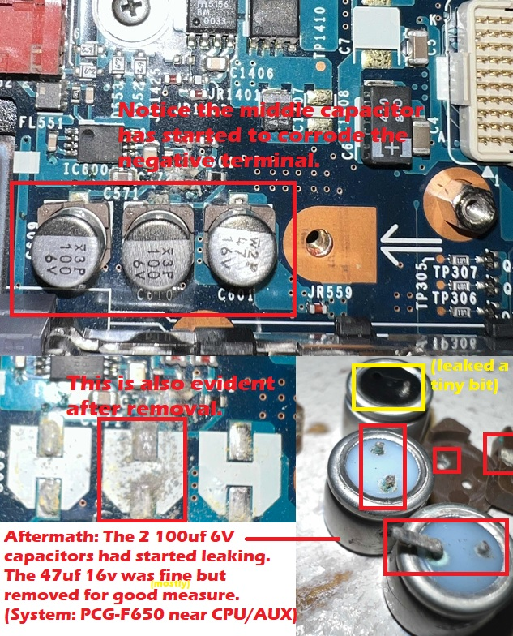

Sony VAIO PCG-F Owner's Guide
One of the best laptops Sony has ever designed. EVER.
Originally written September 20, 2023. Revised September 20, 2023.
Overview of the hardware
PCG-F180 courtesy of Vaio Library/SONY.
The Sony VAIO PCG-F series laptops were the main product line for mid-range to high-end consumer and business laptops that were sold between February 1999 and February 2001 when it was replaced with the PCG-FX series (discontinued November 2002). Depending on the model, the laptops were equipped with AMD K6 based CPUs, Intel Pentium II Mobile CPUs, or Intel Pentium III Mobile CPUs. All of the PCG-F laptops use Super Socket 7 for AMD variants and MMC-2 daughtercards for Intel variants. Earlier models from 1999 came with 32MB or 64MB, and were expandable to 160MB and 192MB respectively (I think these have soldered RAM on one part). The 2000 models came with at least 64MB of RAM and could be expanded to 256MB (I did get this to see a 256MB stick but it will not use it due to chipset limitations). Earlier F series laptops used the NeoMagic 256AV video chipset using 2.5MB of dedicated VRAM, and later ones used the ATI Rage M1 with 8MB of dedicated VRAM (which unfortunately is not compatible with ATI 3D CIF). The laptops usually were equipped with 13", 14.1", or 15" XGA (SXGA+ exclusive to PCG-F690) LCD panels; 13" panels were usually passive-matrix so avoid those for the sake of your eyes. These laptops all took 2.5" 44-pin ATA hard drives, usually in the 10-20GB range in terms of storage capacity. Depending on your model, the F series usually came with Windows 98 or Me, and Windows 2000 if yours had the K-suffix found at the end of the model number. For example, the F650 came with Windows Me but the F650K came with Windows 2000 Professional.
It's difficult to find reliable information for these older laptops but from what I can tell, the F1xx and F2xx models were the ones released in 1999. The F3xx-F6xx models were released in 2000, with the F6xx being the last to release in October of that year. The laptops were manufactured until January-Feburary 2001 when they were replaced with the PCG-FX series, which looked almost the same but had a metallic blue finish on one of the color accents rather than the flat purple/lavender color. The keys on the FX models are in italics rather than having no formatting, and seemingly omitted the microphone on the palmrest. From what I've seen, these models aren't built as well but are still very solid; the keyboards aren't as tactile and the plastics feel a bit weaker. However, it's absolutely nothing compared to the quality drop seen with the newer Sony VAIOs from the Windows Vista/7 era.
Why are these so damn great?
Dual battery slots (which likely isn't important anymore), a floppy drive included by default, a DVD-ROM drive, a really nice keyboard, and a design that looked so sleek and sexy even Steve Jobs once thought of putting Mac OS X on these laptops (to which Sony ultimately declined). Seriously, that actually happened.
Aside from bragging rights if you had one of these, the laptops were very well designed and I believe they were right up there with the IBM ThinkPads in terms of build quality and efficient design... as long as you don't complain and cry at the sight of a touchpad. After the PCG-FX ended production, the laptops slowly started to cheap out with build quality and good engineering, which became very apparent with the PCG-K3x and K4x (also made during a time where people were questioning what made a laptop a "lap"-top) with their sudden shutdown problems. It's very noticeable if you have ever worked with Sony's newer VAIO laptops, especially with the Windows Vista/7 era machines. Even then I noticed the FX keyboard does not feel as tactile as the original F keyboard as I mentioned earlier.
If you look at leading brands and competing systems, these really stand out. The Dell Inspiron 7000, for example, was bulky and rather fragile compared to one of these VAIO laptops. The HP Pavilion was also the same way though that had better structuring. The Compaq Presario laptops? Quantity over quality; the 1200s definitely had some really shit hinges and brittle plastics, and they also went as far as to use full socket 370 CPUs which caused more problems especially if you had one that took more power. The Clamshell iBooks were rather bulky and felt more like toys than tools, though I could go on all day about why I personally dislike those. The VAIO laptops were essentially like the IBM ThinkPad but for the consumer market in a sense. They had the sleeker design cues and solid build quality, but only had whatever consumers were looking for. Granted, the VAIOs were also somewhat popular with businesses. Sony also made ultraportable VAIO machines, and while those probably became obsolete faster than the F series, they were super cool to have and really stood out from the rest of the laptop roster. Even the low end F models with passive matrix screens were 1024x768 which provided much better screen real estate for the time, especially if you planned to upgrade to Windows XP which sometimes needed more screen real estate than 98/2000/Me did (though Vista and 7 really needed it most, and those operating systems will not run sufficiently on these laptops whatsoever). Most other laptops still used SVGA (800x600) screens, which weren't bad but were starting to age poorly by the Y2K era. Name at least 10 other consumer laptops from 1998-2000 that AREN'T specific configurations that used XGA screens by default.... I'll wait.
While the graphics options aren't anything too special, chances are you bought a Sony VAIO to do your work on it, and to use it on the go for things like papers and research. I'm not sure about the NeoMagic 256AV, but the Rage M1 was a pretty basic yet solid 3D chipset that ran some less demanding games. The earlier PCG-F models also had a Yamaha XG-based audio controller which was outstanding, even for MS-DOS sound support and had amazing OPL3 support. To be completely honest I haven't actually taken the time to load up an MS-DOS game on real hardware just yet but that's not far off from my to-do list because I would not want to be held hostage for not loading at least the shareware version of doom... because that's all what "retro computer users" really do nowadays, I guess... (I mean, "Lazy Game Reviews" really checks out because I could find the exact same information on the internet, almost word-for-word even. Also who the FUCK needs an authentic Adlib??)
Known flaws and observations
Even with my strong positive feelings about the PCG-F, one thing I really hate that is also shared with a handful of other older laptops is the fact that the rubber feet on the bottom are prone to literally melting off and causing a mess to clean up if not caught in time. Personally some hard-scrubbing with 99% IPA and some goo-extraction later, I was left without any melted rubber to worry about. That's really the only issue I've had with these aside from the flex cables having the small sky-blue shim just come off after multiple insertions/removals during testing and servicing, which I have seen on a LOT of older sony products including the PS2 and early PS3s... classic!
I did catch a capacitor leaking on my PCG-F650. It's not exactly a known flaw with the system, but rather it is an issue that arises with the age of the system and its capacitors. (the PCG-F series was introduced in 1999!) It's best to catch these earlier than later because my PCG-F650 was | | this close to having its motherboard toasted. I think this also applies to PCG-FX laptops and others that use SMD aluminum electrolytic capacitors. My F650 specifically used a couple of 100uf 6V capacitors (which leaked) and a 47uf 16V capacitor (which kinda leaked, though it looks more like old flux). Damn, they should probably make one of those medication commercials about these problems because now it's reaching Y2K era machines which are essentially the baby boomers of the computers in this world!

I am aware that the DVD-ROM drives are hella old and unfortunately they don't last as long as you think they would; I think a laser adjustment would help but sometimes they just don't seem to work anymore and it's very difficult to find a consistent replacement that will fit the original PCG-F series DVD drive bezels. At least it isn't the HP e-PC, which literally locks out CD drives on a firmware level for """""security reasons""""" so you can install a different drive into these VAIOs. Drives from PCG-FX laptops are also drop-in (or rather, slide-in) replacements but the bezels won't really match, externally and even internally with the location of the clips (and screw post if applicable). These also come with IBM Travelstar 4200rpm HDDs which have been known to fail but I have yet to see an IBM Travelstar fail on me, not a Hitachi Travelstar. I have seen an IBM Deskstar fail on me but that issue has already been reported to death because it was one of those drives.
Vintage problems require vintage solutions
I feel stupid calling legacy systems "vintage" because I sound more like an eBay scalper.
The DVD-ROM drive issue is one thing, but I believe that these also used the dreaded VARTA Nickel-Metal Hydride batteries only found in some PCG-F models. Thankfully they started using CR2026 batteries in the PCG-FX laptops which are easily accessible through one of the access doors on the bottom, but on laptops that DON'T use a CR2026 battery, you should probably remove the system's palmrest to catch that forbidden Smarties (not sponsored) packet that would likely kill your laptop in the future if you don't catch it in time. Other laptops that use these include a lot of older Dell Latitudes up to the D600 and probably some old PowerBooks. It's a long list and I would rather not get into it today. The system should work fine without it. Thankfully if you have ones that take a CR2026 it should be more than possible to easily replace it. You could probably shove a CR2032 in there but I think it caused some issues on one of my machines, but that could also be the fact that my PCG-FX240 was probably used heavily to a point that it may also have bad caps, but it also had some questionable backgrounds and stickers on it which made me question whether or not they took proper care of it.
Repasting these laptops requires some more work, and I believe the CPU needs a thermal pad on the IHS part. The CPU cards can be repasted too if you carefully pry off the IHS revealing the northbridge and the CPU itself. These use MMC-2 cards, while some use Super Socket 7 chips which I think could just be repasted more easily. This problem isn't really "vintage" but the process differs with MMC-2 cards compared to typical laptop CPUs. At least you don't have to take apart the whole damn thing like you do with consumer laptops from the 2010s.
It might also be wise to check if your floppy drive operates smoothly. Usually the lubricant on floppy drives dries out after 30-40 years at most but that mainly goes for the "open-front" drives on the old Macintosh computers (aka auto-inject). It's still possible that you need to re-lubricate it if the drive was heavily used and if the operation is not smooth. I would also recommend cleaning the drive heads, but also take the time to clean the CD/DVD laser. 99% Isopropyl alcohol does wonders; 91% is okay but not as effective and strong, but 70% won't be very effective (and also have a higher chance of damaging electronics if more in-depth cleaning is required). (And if you're stupid curious about getting drunk off of it, no, it will kill you; the chemistry of IPA compared to typical, drinkable alcohol shows this difference). IPA will solve a dead computer's problems, but not your own problems.
BIOS/Firmware updates (if applicable)
Depending on your model there may be a BIOS update available. Personally I have not seen one for my F650 but other models may have them. In my experience the original/stock BIOS is perfectly fine. If you are installing Windows XP (which, by the way, is more resource-intensive compared to 98SE, 2000, and Me) you may need a BIOS update if the manufacturer had to release one to fix blue screens related to Windows XP not starting properly. I faintly remember having an HP 6642F that had the error and I believe the blue screen will mention something related to a BIOS update being required.
I know the PCG-FX series (at least ones using Intel Pentium III chips) had a BIOS update available. Not sure what it fixes, perhaps it adds Windows XP support... I dunno. The details/pages are long gone and I don't think I was able to find them on the FTP archive either.
Maintenance level
While you don't really have to re-paste the system (considering the stock thermal paste under a typical MMC-2 CPU's IHS holds up surprisingly well), It would still be wise to re-paste the chips as needed. I ended up doing this with my PCG-F650 and I didn't notice much of a difference but the Arctic MX-4 made quite a difference as opposed to the stock thermal pad originally on top of the MMC-2 IHS that had long since dried out. These machines don't really need a ton of cooling but this is still a very wise preventative maintenance measure.
On my particular PCG-F650, the capacitors near the audio ports started leaking and I had to replace them. This may differ with other models, but definitely check yours if its one of the 2000 models; chances are your laptop may have the same problem.
Processor upgrades
Earlier PCG-F models like my PCG-F270 take proprietary designs based on MMC-2 CPU cards so unfortunately you're SOL if you don't know how to do BGA soldering or if you can't find a card for those machines that are faster than your current one.
For newer PCG-F models, any MMC-2 card will work; the fastest for that platform is the 850MHz/256K Pentium III or the Celeron 700MHz/128K. If you really want to go all out, you may want to sell one of your kidneys. Jokes aside they are quite pricey but in my experience for an earlier Windows 9x machine, a chip like the 600-650Mhz Pentium III is still very fast, especially compared to older Pentium II laptops using off-die L2 cache that were usually pre-loaded with Windows 98 (or 98SE). The same also goes for any desktop Pentium II and katmai Pentium IIIs (literally just a PII with SSE duct-taped to it...) compared to a Coppermine Pentium III. Even a Mendocino Celeron with the FSB cranked up to 100MHz, having 4x less cache, will perform on-par or even slightly better with the full-speed on-die L2 cache! I know this isn't exactly related to laptop CPUs as much as it is for desktops, but the fact that Coppermine had quite the "secret weapon" really showed how it wiped the floor with Katmai and Deschutes while having half of the L2 cache, but running at the CPU's clock speed 1:1.
It is possible to install a faster CPU on an MMC-2 card using a PBGA495 chip in place of the CPU under one of the IHSes on the card. Some people have managed to run 1GHz Pentium IIIs on laptops like the ThinkPad 600 series (probably 600e or 600X, can't remember) as a result of doing this.
PCG-FX laptops take PGA495 CPUs which are much easier to find, and you can use up to a 1GHz Mobile Pentium III. I think later model FX laptops use the Pentium III-M, which uses one of the many variants of Socket 479. Gee, I wonder whose homework they copied! Okay, jokes aside, do not install a P4 in place of a PIII-M because they are electrically and probably even physically incompatible.
Storage, RAM, and Charger/Battery options
I'm sure almost all of these use old spinning rust IBM Travelstar 4200rpm HDDs, so they may not have much longer to live. I've also seen people install SD cards in place of IDE hard drives... and honestly, that is not a great idea. It's essentially like using eMMC in an older laptop, and we all know that standard is god awful for an operating system, ESPECIALLY Windows 2000 and XP which need more disk throughput if under enough stress. I can understand using SD cards in iPods since those don't need anywhere near as much throughput as a full-on laptop does (and mSATA SSDs for those are just kinda impractical), but an SD card on a computer is not going to be as robust or as reliable as using a CF card (those actually use the same IDE protocol) or an SSD with the appropriate adapter. You can use an mSATA/M.2 SATA to 44-pin IDE and install any SSD up to 128GB. I think 32 or 64GB would be plenty for one of these if you don't plan on storing lots of files. Earlier PCG-F series laptops are rather picky with larger hard drives and I could not get Windows 98 to boot on my PCG-F270 with a 20GB hard drive installed. The BIOS on that system detects it as an 8.455GB drive too. On newer F-series models that can address more than 8.4GB of space on a hard drive, this should not be an issue. It may have been the fact that I used recovery discs for 98FE, but it's nothing new.
Usually for the F series, you can install up to 256MB (2x 128MB PC100), or if you have an FX, 512MB (2x 256MB PC100, maybe 133). Earlier F series VAIOs state a maximum RAM of either 160MB or 192MB; The PCG-F270 for example, comes with 64MB of RAM soldered to the CPU card and near those RAM chips you should see a RAM slot that will take a PC100 SO-DIMM of either 32MB, 64MB, or 128MB.
Any VAIO charger with a rating of at least 65W should work perfectly fine. This laptop does not need a lot of power for it to work unlike some newer models like the PCG-K series which need at least 120W and at most 150W depending on the model. Also, good luck finding a working battery for one of these... The PCGA-BP71 is the battery you commonly see with these, and from what I recall they use 17670 Li-Ion (NOT NiMH) cells which are no longer being produced, and the ones being sold are likely on their deathbed. Around the turn of the millennium, 18650 cells became more common in Li-Ion batteries and I believe the PCGA-BP71A uses those, though I'm not entirely certain on that. If they do, you can definitely re-build them because 18650s are extremely common. I did find a 3rd party PCGA-BP71 using 18650 cells but it is not the safest thing around and there really isn't a whole lot of breathing room for the battery to a point where it gets extremely hot during charging. Also, my specific "DANTONA" 3rd-party battery pack doesn't work 99% of the time. You're better off digging around for 17650 or 17670 cells to fix the old one. I have no idea about a BMS reset with these and information about BMS resets is conflicting to say the least. Either you need specialized equipment or you don't... it's painful to tell if someone's trying to fuck with you or not in that regard considering working on anything with a battery or any battery poses a huge risk of an even bigger problem arising.
Operating system
Any of the """retro""" Windows versions like 95, 98(SE), 2000, and ME (also NT4 if you're enough of a masochist because of drivers and boot volume limitations on first setup) will work because well, look at the sticker. Lemme ask you this, what OS does it say it's "designed for"? You can definitely install XP, but again, it is more resource-intensive especially on these. Windows Vista and later are not offically supported and will not run properly either way.
Personally I do not see a reason to run any variant of GNU+Linux on here as support for this hardware is now very minimal but I believe it should still work fine. I do know BSDs are fun to mess with on super old hardware like this, especially considering one Action Retro managed to at least do something with an old iMac outside of Mac OS 9 or X.
These would have probably been able to run Mac OS X had Sony accepted Steve Jobs' offer. Honestly that was probably for the greater good considering it would have likely been a huge commercial failure.
Conclusion
The Sony VAIO PCG-F series of laptops (along with the FX) have been highly regarded by people like me as one of the most well-thought-out Sony VAIO laptops ever to be produced. Yes, they do have their flaws, but those are also shared with a plethora of other laptops from the Y2K era. IBM thinkpads have degrading rubber coating, PowerBooks have dead PRAM batteries, iBooks have stress cracks (likely because they really just needed to, they really don't feel happy with how they look after a while!!), and then of course we have the common hinge problem that is seen on super old laptops because there is next to no lubricant for the hinge to smoothly move in, causing the screen to just start flopping around instead of being stable. The PCG-F is also somewhat limited compared to other options, but that wasn't a huge deal for people who wanted a more portable machine rather than something with a shit ton of programmable multimedia buttons on it. Comparing this to a laptop like the Presario 1200, this feels much better and sturdier compared to it. Sony designed these and I believe, even built the majority of these in japan. After those laptops were discontinued, it felt more like manufacturers added quantity over quality, and in some cases, quality over function. They just didn't feel like the laptops they once were, and rather something that either failed prematurely, or just felt too clunky or impractical. The PCG-F series of laptops will always hold a special place in my heart, and to anyone who has used one. They are some of the best laptops made during the era, and work incredibly well for older software. Some of them even have Yamaha XG-based sound chips, which are great for MS-DOS!